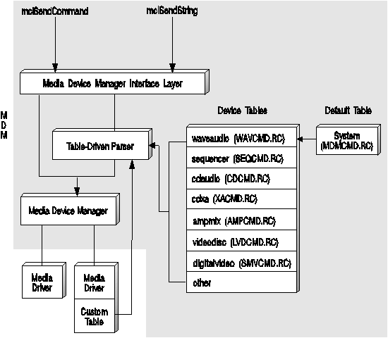

Command tables are structures that allow the MDM string parser to interpret command strings for MCDs. This provides string command interface support for your MCD. Represented as resources to the driver, command tables are created using the RCDATA type of resource. The resource number of the RCDATA block is the device type number.
The following figure illustrates how the Media Device Manager (MDM) uses commands tables. A program or mciRxInit command uses the mciSendString function to pass a string command to the MDM. In turn, MDM calls its string parser to interpret the string command and change it into the equivalent procedural command. MDM scans the command tables from the most specific to the least specific. It first scans any custom device-specific tables (if present in the MCD). Next, MDM looks for the string in the device-type table and finally the system default table.
MDM provides device-type tables to support OS/2 multimedia logical devices as shown in the above figure. These built-in tables will meet your MCD requirements unless you have to add or modify commands. If your MCD has new requirements (such as a new flag or a different data structure for a command), you must create a custom table to define commands specific to your device.
A custom table allows you to create your own versions of basic media control interface commands by adding new or changed command entries. For example, the device-type table for digital video supports the SEEK flags shown in the following example.
"seek", MCI_SEEK, 0, MCI_COMMAND_HEAD, "notify", MCI_NOTIFY, MCI_FLAG, "wait", MCI_WAIT, MCI_FLAG, "to start", MCI_TO_START, MCI_FLAG, "to end", MCI_TO_END, MCI_FLAG, "to", MCI_TO, MCI_INTEGER, "", 0L, MCI_END_COMMAND,
You, however, want your MCD to seek to the nearest position. To accomplish this, you can create a custom table in your MCD to parse commands for the digital video player (as shown in the following example. Note that the custom table must include all parameters associated with the changed command (not just new and changed parameters).
"seek", MCI_SEEK, 0, MCI_COMMAND_HEAD, "notify", MCI_NOTIFY, MCI_FLAG, "wait", MCI_WAIT, MCI_FLAG, "to start", MCI_TO_START, MCI_FLAG, "to nearest", MCI_TO_NEAREST, MCI_FLAG, "to end", MCI_TO_END, MCI_FLAG, "to", MCI_TO, MCI_INTEGER, "", 0L, MCI_END_COMMAND,
When writing an MCD, the DLL file names (which include the command table resources) must be referenced in the MMPM2.INI file. MDM updates the INI file with MCD command table information you provide when installing your MCD. See Installing a Media Control Driver for details.
The following shows an example of how command table entries appear in the MMPM2.INI file. The MCDTABLE entry includes the MDM.DLL file, which includes the device-type command tables and the default system table. The VSDTABLE entry indicates that a custom command table resource is located in the SVMC.DLL file.
MDM scans the command tables from the most specific to the least specific. In the example below MDM first searches the custom table resources in the SVMC.DLL file. MDM next searches the internal digitalvideo device-type table (SMVCMD.RC) and then the system default table (MDMCMD.RC) located in the MDM.DLL file.
[ibmdigvid01] VERSIONNUMBER=1 PRODUCTINFO=SOFTWARE MOTION VIDEO MCDDRIVER=SVMC VSDDRIVER=AUDIOIF PDDNAME=AUDIO1$ MCDTABLE=MDM VSDTABLE=SVMC RESOURCENAME=DIGITALVIDEO DEVICEFLAG=1 DEVICETYPE=12 SHARETYPE=3 RESOURCEUNITS=1 RESOURCECLASSES=1,1 VALIDCOMBINATIONS= EXTNAMES=3,UMB,MMM,V ALIASNAME=DV